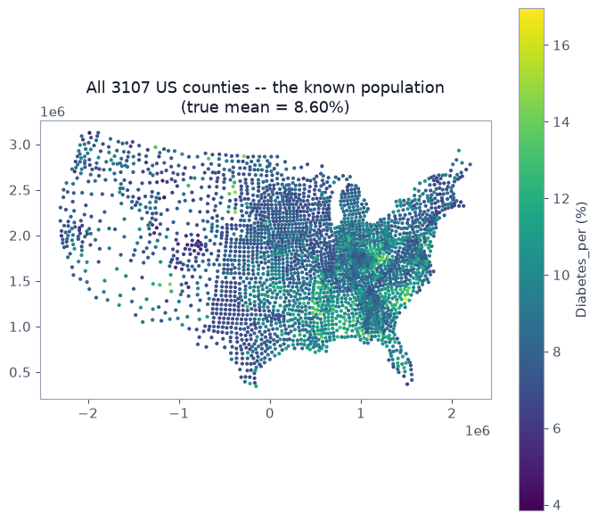
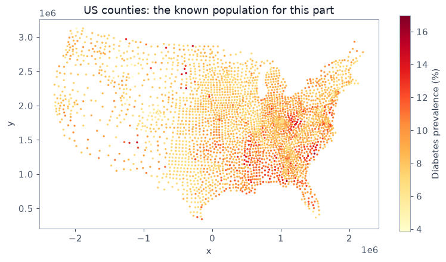

This folder is Part 8 of Module 04. The population is known: diabetes prevalence for all 3,107 US counties in diabetes_usa.csv. Five notebooks ask which counties to visit, how precise the resulting mean is, and where a monitoring network still has gaps. The network example uses the California PM2.5 sites from Part 7.
Spatial Sampling and Design. This notebook. Separates design-based inference from model-based inference, and defines inclusion probabilities, spatial balance, and the effective sample size.
Sampling Designs. Draws classical, stratified, cluster, spatially balanced, and model-based samples from the same counties.
Estimation and Variance. Estimates the mean with a variance matched to the design, and compares designs by drawing them again and again against the known population.
Monitoring-Network Design. Finds gaps in the California PM2.5 network and places the next site where the kriging variance is highest.
Exercises. Works five problems drawn from the foundations, the designs, and the variance chapters.
Library:geolattice.spatial_statistics.sampling
Overview
Every earlier Part in this tutorial started from data that already existed: monitors already placed, counties already delineated. This Part asks a different question: where should the next measurements be taken, and how much does that choice matter? Because spatial data are, by Part 2’s own finding, rarely independent, a poorly placed sample of size \(n\) can carry far less real information than \(n\) independent observations would: or, with a good design, sometimes almost as much as a much larger one.
Step
What we do
The laboratory
3,107 US counties, Diabetes_per: a genuine census, so every design’s true error is knowable by repeated sampling
Two philosophies
Design-based inference (Sections 4-5) vs. the model-based methods this whole tutorial has otherwise used
Spatial balance
A single number scoring how evenly a sample covers the region
Effective sample size
Why \(n\) spatially correlated observations are worth less than \(n\) independent ones: and by how much
Locate the repository root, import the spatial-statistics helpers, and point DATA at the example files.
Installation. This notebook needs installation option 3 (core, spatial analysis and spatial statistics): pip install "geolattice[statistics]". See “Installation options” in the GeoLattice README.
Code
import sysfrom pathlib import Pathimport numpy as npimport pandas as pdimport matplotlib.pyplot as pltROOT = Path.cwd().resolve()for candidate in [ROOT, *ROOT.parents]:if (candidate /"pyproject.toml").is_file() and (candidate /"Data").is_dir(): ROOT = candidatebreakelse:raiseFileNotFoundError("Could not find the GeoLattice repository root.")sys.path.insert(0, str(ROOT))DATA = ROOT /"Data"/"00_shared"/"data_spatial_stat"import geolattice.spatial_statisticsfrom geolattice.viz import apply_map_stylefrom geolattice.spatial_statistics.sampling import simple_random, estimate_mean, spatial_balance, effective_sample_size, design_effectapply_map_style()COLORS = {"blue": "#2b6cb0", "red": "#c0392b", "green": "#2f855a", "orange": "#dd6b20","grey": "#718096", "purple": "#6b46c1", "teal": "#2c7a7b"}print(f"geolattice.spatial_statistics : version {geolattice.spatial_statistics.__version__}")
geolattice.spatial_statistics : version 0.3.49
The Known-Population Laboratory
Every earlier Part treated its dataset as a sample from something larger and unknown. This Part inverts that: diabetes_usa.csv is a census of all 3,107 contiguous US counties: the true national mean of Diabetes_per is simply its mean over every row, known exactly, not estimated. That lets every sampling design in this Part be scored against ground truth by literally drawing a sample of size \(n\), computing an estimate, and comparing to the known truth: repeated hundreds of times to see the distribution of each design’s error, not just one lucky or unlucky draw.
Code
usa = pd.read_csv(DATA /"diabetes_usa.csv")print(f"counties: {len(usa)}")print(f"true population mean Diabetes_per: {usa['Diabetes_per'].mean():.4f}")print(f"true population sd: {usa['Diabetes_per'].std():.4f}")fig, ax = plt.subplots(figsize=(7, 6))sc = ax.scatter(usa["X"], usa["Y"], c=usa["Diabetes_per"], cmap="viridis", s=4)plt.colorbar(sc, ax=ax, label="Diabetes_per (%)")ax.set_title(f"All {len(usa)} US counties -- the known population\n(true mean = {usa['Diabetes_per'].mean():.2f}%)")ax.set_aspect("equal")plt.tight_layout()plt.savefig("known_population.png", dpi=100, bbox_inches="tight")plt.show()
counties: 3107
true population mean Diabetes_per: 8.5966
true population sd: 1.5673

Even at a glance, Diabetes_per shows clear spatial structure: a Southeastern belt of higher prevalence, lower values in the Mountain West and parts of the upper Midwest. This structure is exactly what makes sample placement matter: a design that spreads its counties evenly across this map will, by construction, avoid accidentally over- or under-representing any one region.
Design-Based vs. Model-Based Inference
Every earlier Part relied on model-based inference: assume a statistical model for how the data were generated (a semivariogram in Part 7, a spatial error structure in Part 3), then use that model to make predictions and quantify uncertainty. This Part’s core designs (Chapters 8.1-8.3) instead use design-based inference: make no assumption about how Diabetes_per varies across space at all. Instead, the randomness comes entirely from the sampling mechanism itself, which counties happened to be selected, and every county’s known, pre-specified probability of selection is enough, on its own, to build an unbiased estimator and a valid confidence interval.
This is a genuinely different kind of guarantee: a design-based estimator is valid regardless of what the true spatial pattern of Diabetes_per looks like, as long as the randomization was carried out as specified. Chapter 8.2’s model-based designs (space_filling, clhs) break this guarantee deliberately, trading design-based validity for covariate-space coverage: a trade worth understanding explicitly before using either family.
Inclusion Probabilities
Every design-based sample carries an inclusion probability\(\pi_i\) for every unit in the population: the probability that unit \(i\) ends up in the sample, under the randomization actually used. Simple random sampling gives every county the same \(\pi_i = n/N\); unequal-probability designs (Chapter 8.2’s PPS-GRTS) deliberately vary \(\pi_i\), e.g., to favour more populous counties. The Horvitz-Thompson estimator, \(\hat{Y} = \sum_{i \in s} y_i / \pi_i\), is unbiased for the population total under any set of inclusion probabilities, as long as every \(\pi_i > 0\): this is the mathematical foundation every estimate_mean call in this Part rests on.
Code
sample = simple_random(usa[["X", "Y"]], n=100, seed=1)print(f"n = {sample.n}, N = {sample.N}")print(f"inclusion probability (every unit, SRS): {sample.pi[0]:.4f} (= n/N = {sample.n/sample.N:.4f})")est = estimate_mean(usa["Diabetes_per"].to_numpy(), sample)print(f"\nHT/Hajek estimate: {est.mean:.3f} (se={est.se:.3f})")print(f"95% CI: [{est.lo:.3f}, {est.hi:.3f}]")print(f"true population mean: {usa['Diabetes_per'].mean():.3f} "f"(inside this CI: {est.lo <= usa['Diabetes_per'].mean() <= est.hi})")
n = 100, N = 3107
inclusion probability (every unit, SRS): 0.0322 (= n/N = 0.0322)
HT/Hajek estimate: 8.720 (se=0.171)
95% CI: [8.384, 9.056]
true population mean: 8.597 (inside this CI: True)
Spatial Balance
A spatially balanced sample spreads its selected units evenly across the region, avoiding both tight clusters and large gaps: Stevens & Olsen’s balance statistic \(B\) (lower is better) quantifies exactly this, independent of the values being measured.
The clustered sample’s balance statistic is dramatically worse: a direct, visible confirmation that \(B\) measures exactly the geometric property its name promises. Chapter 8.2’s spatially balanced designs (systematic, GRTS) are built specifically to minimize \(B\) relative to a plain random sample.
Effective Sample Size
Part 2 established that spatially autocorrelated observations carry less independent information than the same count of truly independent ones. effective_sample_size(n, rho, kind) makes this precise for two simple correlation structures:
'ar1': correlation decays geometrically with distance along an ordering: \(\rho^{|i-j|}\).
'equicorrelated': every pair of observations shares the same correlation \(\rho\), regardless of distance.
At \(\rho=0.5\), \(n=100\)AR(1)-correlated observations carry roughly the same information as 33 independent ones: matching this Part’s own reference figure exactly. The equicorrelated structure is far more punishing: every pair sharing the same correlation, no matter how far apart, collapses effective sample size to under 2 even at a modest \(\rho=0.5\), because adding more correlated observations barely reduces uncertainty about a single shared underlying quantity. Real spatial data typically sit somewhere between these two extremes: near neighbours correlate more strongly than distant ones, closer to AR(1)’s decay than equicorrelation’s uniform penalty: which is exactly why spatially balanced designs (Chapter 8.2) that spread samples apart, rather than clustering them, can recover so much of the lost effective information.
Design Effect
The design effect\(\text{deff} = \sigma^2_{\text{design}} / \sigma^2_{\text{SRS}}\) compares any design’s actual sampling variance to what simple random sampling of the same size \(n\) would achieve: \(\text{deff} < 1\) means the design is more efficient than SRS (Chapter 8.2’s spatially balanced designs); \(\text{deff} > 1\) means less efficient (Chapter 8.3’s two-stage cluster designs, which trade efficiency for field-cost savings).
Code
print(f"design_effect(var_design=0.115**2, var_srs=0.157**2): {design_effect(0.115**2, 0.157**2):.3f}")print("(a systematic Hilbert-order design's variance relative to SRS, at n=100 -- Chapter 8.2 measures this directly)")
design_effect(var_design=0.115**2, var_srs=0.157**2): 0.537
(a systematic Hilbert-order design's variance relative to SRS, at n=100 -- Chapter 8.2 measures this directly)
Summary and Conclusions
This chapter laid the conceptual and quantitative groundwork every later chapter in this Part builds on.
What we did
Established diabetes_usa.csv’s 3,107-county census as a known-population laboratory where every design’s true error can be measured by repeated sampling, not just assumed.
Distinguished design-based inference (this Part’s core designs) from the model-based inference every earlier Part relied on.
Explained inclusion probabilities and the Horvitz-Thompson estimator they make unbiased.
Demonstrated spatial balance \(B\) concretely: an artificially clustered sample scores dramatically worse than simple random sampling.
Confirmed effective sample size numerically: \(\rho=0.5\), \(n=100\) AR(1)-correlated observations carry the information of about 33 independent ones: exactly this Part’s reference figure.
Defined the design effect that every later chapter uses to compare designs against the SRS baseline.
Practical takeaways
Design-based validity does not depend on knowing the true spatial pattern: that is its whole appeal, and its whole limitation (it says nothing about efficiency, only about unbiasedness given the randomization used).
A low spatial-balance score is a purely geometric property, checkable before ever looking at the outcome variable: use it to audit a sample’s spread independent of what it will be used to estimate.
Effective sample size makes explicit, numerically, the same lesson Part 2 taught qualitatively: spatially clustered data are not as informative as their raw count suggests.
Next steps
Chapter 8.2 (Sampling Designs) builds the actual designs this chapter’s concepts describe: from plain random sampling through spatially balanced GRTS to model-based space-filling designs: and measures each one’s real design effect and spatial balance on this same known population.
Map
Code
fig, ax = plt.subplots(figsize=(8, 5.5))sc = ax.scatter(usa["X"], usa["Y"], c=usa["Diabetes_per"], cmap="YlOrRd", s=6, linewidths=0)plt.colorbar(sc, ax=ax, shrink=0.7, label="Diabetes prevalence (%)")ax.set_aspect("equal")ax.set_title("US counties: the known population for this part")ax.set_xlabel("x")ax.set_ylabel("y")plt.tight_layout()plt.show()

Further reading
Textbooks
Reference
Notes
Särndal, C.-E., Swensson, B. & Wretman, J. (1992). Model Assisted Survey Sampling. Springer.
The design-based framework, inclusion probabilities, and Horvitz-Thompson estimator behind Sections 4-5
Stevens, D. L. & Olsen, A. R. (2004). Spatially balanced sampling of natural resources. Journal of the American Statistical Association, 99, 262-278.
The spatial balance statistic in Section 6
Key papers
Paper
Contribution
Griffith, D. A. (2005). Effective geographic sample size in the presence of spatial autocorrelation. Annals of the Association of American Geographers, 95, 740-760.